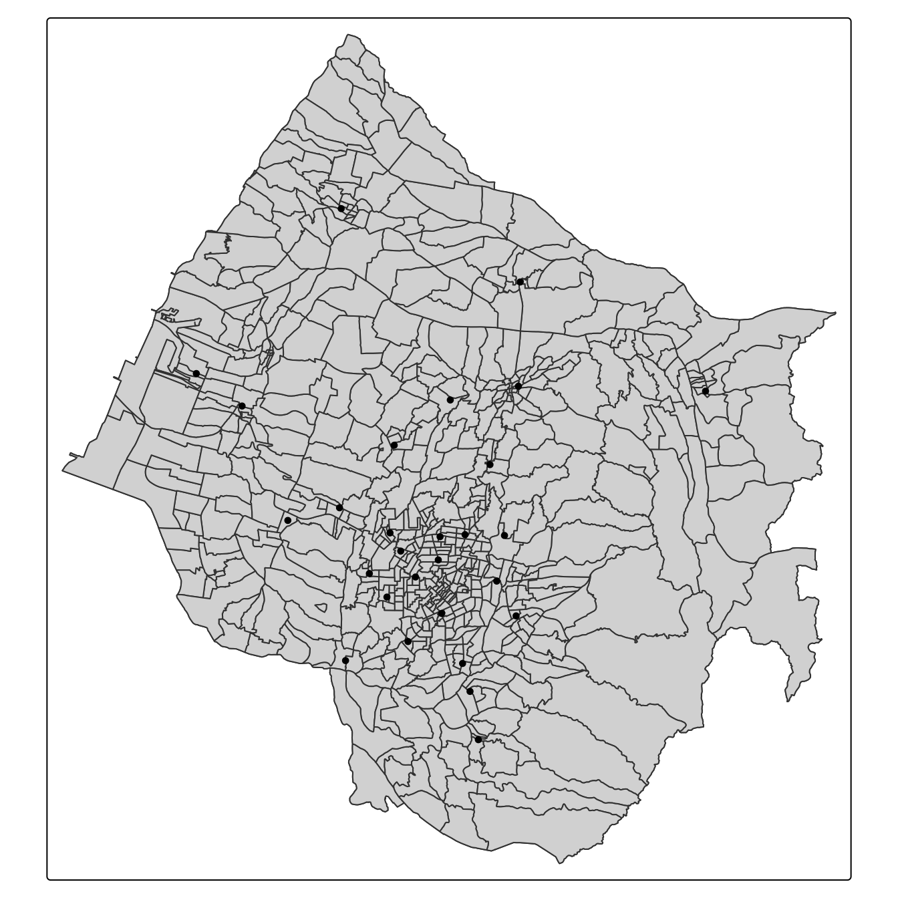
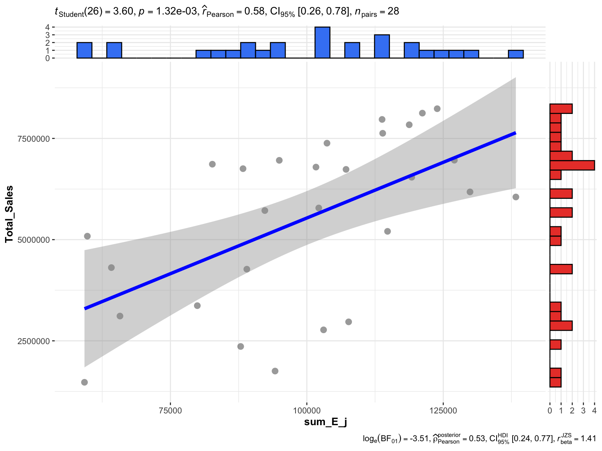
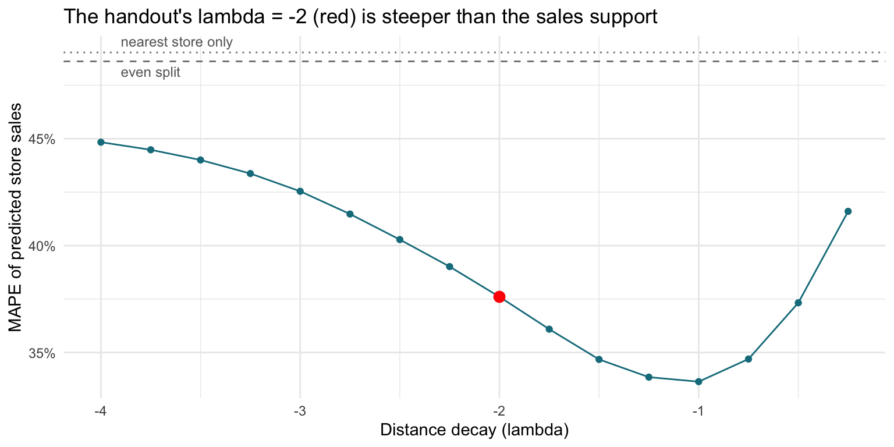
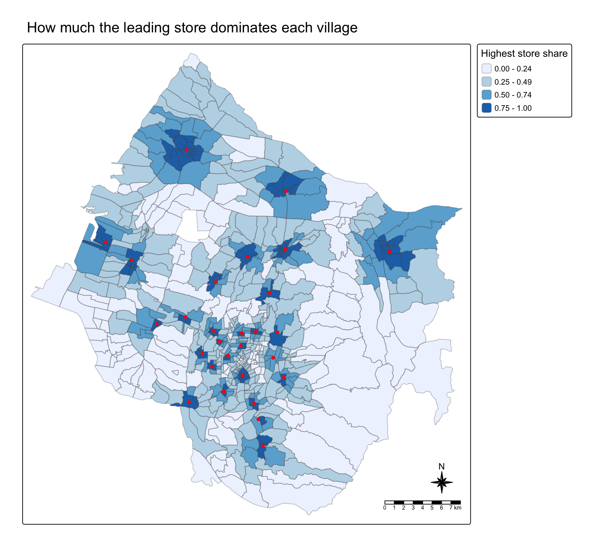

pacman::p_load(sf, tidyverse, MCI, tmap, ggstatsplot)Market Area Analysis with the Huff Model
HANDS-ON EXERCISE 8
R MCI Huff model Trade area Taichung
This exercise follows Market Area Analysis for Retail and Service Locations using Huff model, the hands-on notes for the Market Area Analysis lesson of the course.
1. Overview
Exercise 7 asked how easily people in one place can reach a service. This one asks the question from the store’s side: given where people live and where the stores are, how much of each neighbourhood’s custom does each store get?
The setting is a fast-food franchise with 28 stores in Taichung City. The task is to delineate each store’s trade area, the area it draws customers from, and to estimate store sales from where the population lives.
The Huff model (Huff, 1963) treats a shopper’s choice of store as a probability rather than a certainty. The probability that a resident of village i uses store j is
\[ P_{ij} = \frac{A_j^{\gamma} \, d_{ij}^{\lambda}}{\sum_{k} A_k^{\gamma} \, d_{ik}^{\lambda}} \]
where \(A_j\) is the store’s attractiveness (usually its size), \(d_{ij}\) the distance, \(\gamma\) the sensitivity to attractiveness and \(\lambda\) a negative distance decay. The denominator runs over every store, so each village’s probabilities sum to one: a store gains share only by taking it from the others. Multiplying by each village’s population and summing over villages gives a store’s expected customers.
The lesson also covers the MCI (multiplicative competitive interaction) model, which estimates \(\gamma\), \(\lambda\) and further store attributes from observed market shares. The handout uses the MCI package for the Huff step only. Section 9.5 explains why the course data cannot support an MCI fit.
2. The Data
| Dataset | Description | Format |
|---|---|---|
STORES_TC |
28 store locations in Taichung City | ESRI Shapefile (point) |
TOWN_TC |
28 district boundaries | ESRI Shapefile (polygon) |
VILLAGE_TC |
622 village (里) boundaries | ESRI Shapefile (polygon) |
pop2019.csv |
Households and population by village, December 2019 | CSV, 625 rows |
Store_sales_data.csv |
Bills and sales amount by store and POD code |
CSV, 5,499 rows |
pop2019.csv has households (H_CNT), total population (P_CNT), males (M_CNT) and females (F_CNT). Its INFO_TIME of 108Y12M is December of year 108 in the Republic of China calendar, which is 2019.
The handout’s data list names the layers STORES_TN and VILLAGE_TN; the files and the code use _TC. The folder also ships a sixth file, storeCD.csv, which the handout never reads. It gives every store a capacity of 50, so it carries no more information than the constant store size used below.
The data was prepared by Prof. Kam for teaching use. I checked it against the handout’s own printed output: the feature counts, the summary() tables and the final correlation all match, apart from one quartile of the sales summary that prints as 26,702 here and 26,703 in the handout, a rounding difference.
3. Getting Started
4. Importing Data
4.1 Importing geospatial data
stores <- st_read(
dsn = "data/geospatial",
layer = "STORES_TC")Reading layer `STORES_TC' from data source
`/Users/jedidiahasaf/Downloads/Projects/isss626-coursework/Hands-on_Ex/Hands-on_Ex08/data/geospatial'
using driver `ESRI Shapefile'
Simple feature collection with 28 features and 3 fields
Geometry type: POINT
Dimension: XY
Bounding box: xmin: 202702.9 ymin: 2662196 xmax: 232773.2 ymax: 2693557
Projected CRS: TWD97 / TM2 zone 121town <- st_read(
dsn = "data/geospatial",
layer = "TOWN_TC")Reading layer `TOWN_TC' from data source
`/Users/jedidiahasaf/Downloads/Projects/isss626-coursework/Hands-on_Ex/Hands-on_Ex08/data/geospatial'
using driver `ESRI Shapefile'
Simple feature collection with 28 features and 7 fields
Geometry type: POLYGON
Dimension: XY
Bounding box: xmin: 194797.1 ymin: 2654887 xmax: 240450.2 ymax: 2703838
Projected CRS: TWD97 / TM2 zone 121village <- st_read(
dsn = "data/geospatial",
layer = "VILLAGE_TC")Reading layer `VILLAGE_TC' from data source
`/Users/jedidiahasaf/Downloads/Projects/isss626-coursework/Hands-on_Ex/Hands-on_Ex08/data/geospatial'
using driver `ESRI Shapefile'
Simple feature collection with 622 features and 10 fields
Geometry type: MULTIPOLYGON
Dimension: XY
Bounding box: xmin: 194797.1 ymin: 2654887 xmax: 240450.2 ymax: 2703838
Projected CRS: TWD97 / TM2 zone 121c(stores = st_crs(stores)$epsg,
town = st_crs(town)$epsg,
village = st_crs(village)$epsg) stores town village
3826 3826 3826 All three layers are in TWD97 / TM2 zone 121 (EPSG 3826), a projected system in metres, so distances can be computed directly.
The handout views the layers in interactive mode. I draw the same overlay as a static map, because the interactive version embeds all 622 village outlines in the page.
tm_shape(town) +
tm_polygons() +
tm_shape(village) +
tm_polygons() +
tm_shape(stores) +
tm_dots()
Most stores are in and around the city centre, and the rest are spread over the towns to the west and north. The large villages in the south-east have none.
4.2 Importing aspatial data
pop2019 <- read_csv(
"data/aspatial/pop2019.csv")
store_sales <- read_csv(
"data/aspatial/Store_sales_data.csv")summary(store_sales) Store Code POD code Bills Amount
Length:5499 Length:5499 Min. : 1.0 Min. : 0
Class :character Class :character 1st Qu.: 37.0 1st Qu.: 26702
Mode :character Mode :character Median : 186.0 Median : 139643
Mean : 331.9 Mean : 236787
3rd Qu.: 457.0 3rd Qu.: 331952
Max. :7764.0 Max. :6076060
Ave Bill
Min. : 0.0
1st Qu.: 661.3
Median : 730.5
Mean : 825.1
3rd Qu.: 862.2
Max. :24356.0 5. Data Preparation
5.1 Aggregating store sales
store_sales_aggre <- store_sales %>%
group_by(`Store Code`) %>%
summarise(
"Total_Bill" = sum(Bills, na.rm = TRUE),
"Total_Sales" = sum(Amount, na.rm = TRUE))The sales file covers far more than the 28 Taichung stores:
tibble(store_codes = n_distinct(store_sales$`Store Code`, na.rm = TRUE),
rows_without_code = sum(is.na(store_sales$`Store Code`)),
taichung_stores_found = sum(stores$Store_CD %in% store_sales$`Store Code`),
taichung_share_of_amount = round(
sum(store_sales$Amount[store_sales$`Store Code` %in% stores$Store_CD]) /
sum(store_sales$Amount), 3))# A tibble: 1 × 4
store_codes rows_without_code taichung_stores_found taichung_share_of_amount
<int> <int> <int> <dbl>
1 233 29 28 0.119The join below keeps only the 28 stores on the map, which is what the analysis needs. The other stores matter in one way: any of them near the city boundary would compete for the same border villages. The file gives no locations for them, so the model cannot include them.
5.2 Relational join
stores <- stores %>%
left_join(store_sales_aggre,
by = join_by(
Store_CD == `Store Code`)) %>%
mutate(Store_size = 100)summary(stores) Store_Name Store_Addr Store_CD Total_Bill
Length:28 Length:28 Length:28 Min. : 1767
Class :character Class :character Class :character 1st Qu.: 5698
Mode :character Mode :character Mode :character Median : 8634
Mean : 8021
3rd Qu.:10349
Max. :14468
Total_Sales geometry Store_size
Min. :1475963 POINT :28 Min. :100
1st Qu.:4044821 epsg:3826 : 0 1st Qu.:100
Median :6116336 +proj=tmer...: 0 Median :100
Mean :5542852 Mean :100
3rd Qu.:6959911 3rd Qu.:100
Max. :8234234 Max. :100 Every store found a sales record. Store_size is set to 100 for all of them, a placeholder for real attractiveness such as floor area or seats. Section 9.1 shows what that placeholder does to the model.
5.3 Tidying pop2019 data.frame
glimpse(pop2019)Rows: 625
Columns: 11
$ COUNTY_ID <dbl> 66000, 66000, 66000, 66000, 66000, 66000, 66000, 66000, 6600…
$ COUNTY <chr> "臺中市", "臺中市", "臺中市", "臺中市", "臺中市", "臺中市", "臺中市", "臺中市", "臺中市…
$ TOWN_ID <dbl> 66000110, 66000110, 66000110, 66000110, 66000110, 66000110, …
$ TOWN <chr> "大甲區", "大甲區", "大甲區", "大甲區", "大甲區", "大甲區", "大甲區", "大甲區", "大甲區…
$ V_ID <chr> "66000110-002", "66000110-009", "66000110-021", "66000110-00…
$ VILLAGE <chr> "大甲里", "中山里", "太白里", "孔門里", "文曲里", "文武里", "日南里", "平安里", "江南里…
$ H_CNT <dbl> 454, 1781, 406, 383, 355, 2071, 2039, 785, 461, 559, 769, 80…
$ P_CNT <dbl> 1255, 5252, 1471, 1001, 1264, 6687, 6739, 2642, 1618, 1977, …
$ M_CNT <dbl> 626, 2533, 758, 538, 640, 3244, 3406, 1310, 838, 983, 1273, …
$ F_CNT <dbl> 629, 2719, 713, 463, 624, 3443, 3333, 1332, 780, 994, 1239, …
$ INFO_TIME <chr> "108Y12M", "108Y12M", "108Y12M", "108Y12M", "108Y12M", "108Y…glimpse(village)Rows: 622
Columns: 11
$ VILLCODE <chr> "66000110029", "66000120001", "66000120002", "66000120003",…
$ COUNTYNAME <chr> "臺中市", "臺中市", "臺中市", "臺中市", "臺中市", "臺中市", "臺中市", "臺中市", "臺中…
$ TOWNNAME <chr> "大甲區", "清水區", "清水區", "清水區", "清水區", "清水區", "清水區", "清水區", "清水…
$ VILLNAME <chr> "建興里", "鰲峰里", "靈泉里", "清水里", "文昌里", "南寧里", "西寧里", "北寧里", "中興…
$ VILLENG <chr> "Jianxing Vil.", "Aofeng Vil.", "Lingquan Vil.", "Qingshui …
$ COUNTYID <chr> "B", "B", "B", "B", "B", "B", "B", "B", "B", "B", "B", "B",…
$ COUNTYCODE <chr> "66000", "66000", "66000", "66000", "66000", "66000", "6600…
$ TOWNID <chr> "B11", "B12", "B12", "B12", "B12", "B12", "B12", "B12", "B1…
$ TOWNCODE <chr> "66000110", "66000120", "66000120", "66000120", "66000120",…
$ NOTE <chr> NA, NA, NA, NA, NA, NA, NA, NA, NA, NA, NA, NA, NA, NA, NA,…
$ geometry <MULTIPOLYGON [m]> MULTIPOLYGON (((211953.9 27..., MULTIPOLYGON (…The village identifier in pop2019 (V_ID) has a dash that the village layer’s VILLCODE does not, so the dash is removed before joining.
pop2019 <- pop2019 %>%
mutate(V_ID = str_remove_all(
V_ID, "-"))village <- village %>%
left_join(pop2019,
by = join_by(
VILLCODE == V_ID))5.4 Checking for missing values
summary(village) VILLCODE COUNTYNAME TOWNNAME VILLNAME
Length:622 Length:622 Length:622 Length:622
Class :character Class :character Class :character Class :character
Mode :character Mode :character Mode :character Mode :character
VILLENG COUNTYID COUNTYCODE TOWNID
Length:622 Length:622 Length:622 Length:622
Class :character Class :character Class :character Class :character
Mode :character Mode :character Mode :character Mode :character
TOWNCODE NOTE COUNTY_ID COUNTY
Length:622 Length:622 Min. :66000 Length:622
Class :character Class :character 1st Qu.:66000 Class :character
Mode :character Mode :character Median :66000 Mode :character
Mean :66000
3rd Qu.:66000
Max. :66000
NA's :5
TOWN_ID TOWN VILLAGE H_CNT
Min. :6.6e+07 Length:622 Length:622 Min. : 180
1st Qu.:6.6e+07 Class :character Class :character 1st Qu.: 724
Median :6.6e+07 Mode :character Mode :character Median :1335
Mean :6.6e+07 Mean :1592
3rd Qu.:6.6e+07 3rd Qu.:2195
Max. :6.6e+07 Max. :7599
NA's :5 NA's :5
P_CNT M_CNT F_CNT INFO_TIME
Min. : 487 Min. : 257 Min. : 230 Length:622
1st Qu.: 2139 1st Qu.:1095 1st Qu.:1053 Class :character
Median : 3862 Median :1911 Median :1934 Mode :character
Mean : 4545 Mean :2234 Mean :2311
3rd Qu.: 6151 3rd Qu.:3022 3rd Qu.:3171
Max. :18652 Max. :8741 Max. :9911
NA's :5 NA's :5 NA's :5
geometry
MULTIPOLYGON :622
epsg:3826 : 0
+proj=tmer...: 0
Five villages have no population. The handout drops them without asking what they are:
village %>%
filter(is.na(P_CNT)) %>%
mutate(area_km2 = round(as.numeric(st_area(geometry)) / 1e6, 2)) %>%
st_drop_geometry() %>%
select(VILLCODE, TOWNNAME, NOTE, area_km2) VILLCODE TOWNNAME NOTE area_km2
1 66000120S01 清水區 未編定村里 1.52
2 66000120S02 清水區 未編定村里 7.13
3 66000140S01 梧棲區 未編定村里 8.75
4 66000250S01 龍井區 未編定村里 1.12
5 66000120S03 清水區 未編定村里 4.74They are not missing data. All five have codes ending in S01 to S03 and the note 未編定村里, “unassigned village”: land in three coastal districts that belongs to no village and has no registered residents. Dropping them is right, and that is the reason.
village <- village %>%
filter(!is.na(P_CNT))
c(H_CNT = any(is.na(village$H_CNT)),
P_CNT = any(is.na(village$P_CNT)),
M_CNT = any(is.na(village$M_CNT)),
F_CNT = any(is.na(village$F_CNT)))H_CNT P_CNT M_CNT F_CNT
FALSE FALSE FALSE FALSE A join can also fail the other way, and summary(village) cannot show it, because a left join keeps every village row but silently discards population rows that match no village:
pop_unmatched <- pop2019 %>%
anti_join(village %>% st_drop_geometry(),
by = join_by(V_ID == VILLCODE))
pop_unmatched %>%
group_by(TOWN_ID, TOWN) %>%
summarise(villages = n(), residents = sum(P_CNT), .groups = "drop")# A tibble: 1 × 4
TOWN_ID TOWN villages residents
<dbl> <chr> <int> <dbl>
1 66000290 和平區 8 109028 population rows match no polygon, all of them in Heping District (和平區, town code 66000290). Heping is in neither TOWN_TC nor VILLAGE_TC: the layers cover 28 of Taichung’s 29 districts. It is the mountainous district on the city’s eastern side, and its 10,902 residents are 0.4% of the city’s population, so leaving it out barely changes the results. It does mean the eastern edge of every map below is the edge of the data, not of the city.
6. Computing the Distance Matrix
The handout says it uses each village’s centroid, but its code uses st_point_on_surface(). That is the better choice: a centroid can fall outside an irregular polygon, while a point on surface is always inside it. The distances are straight lines, in metres.
village_center <- st_point_on_surface(village)
distmat <- st_distance(village_center, stores)rownames(distmat) <- village$`VILLCODE`
colnames(distmat) <- stores$`Store_CD`
distmat_long <- distmat %>%
as.data.frame() %>%
rownames_to_column(var = "VILLCODE") %>%
pivot_longer(
cols = -VILLCODE,
names_to = "Store_CD",
values_to = "distance"
) %>%
mutate(distance = as.numeric(distance))7. Preparing the Interaction Matrix
interaction_matrix <- distmat_long %>%
left_join(
stores %>%
st_drop_geometry() %>%
select(Store_CD, Store_size),
by = "Store_CD") %>%
relocate(
distance, .after = last_col())summary(interaction_matrix) VILLCODE Store_CD Store_size distance
Length:17276 Length:17276 Min. :100 Min. : 108.5
Class :character Class :character 1st Qu.:100 1st Qu.: 6678.7
Mode :character Mode :character Median :100 Median :11965.3
Mean :100 Mean :12762.7
3rd Qu.:100 3rd Qu.:18122.3
Max. :100 Max. :41395.4 That is 617 villages times 28 stores, 17,276 pairs. The closest pair is 108 m apart and the furthest 41 km.
8. Computing the Huff Model
huff_share <- huff.shares(
interaction_matrix, "VILLCODE", "Store_CD",
"Store_size", "distance")8.1 Trade area analysis for a single store
The handout’s text says it selects store TG, but its code and its map use BT. I follow the code.
market_share <- huff_share %>%
filter(Store_CD == "BT")Trade_area <- village %>%
left_join(market_share)selected_store <- stores %>%
filter(Store_CD == "BT")tm_shape(Trade_area) +
tm_polygons(fill = "p_ij",
fill.scale = tm_scale_intervals(
style = "quantile",
n = 10,
values = "brewer.blues"),
fill.legend = tm_legend(
title = "Patronage Probability")) +
tm_shape(selected_store) +
tm_dots(size = 0.3,
fill = "red",
col = "black") +
tm_title("Distribution of Patronage Probability of Store BT by village") +
tm_layout(frame = TRUE) +
tm_borders(fill_alpha = 0.5) +
tm_compass(type = "8star", size = 2) +
tm_scalebar() +
tm_grid(alpha = 0.2)
BT’s share is highest in the central villages around it and falls away with distance. Two things on this map are easy to misread. First, the quantile classes compress the top of the range: the darkest class runs from under 0.07 to 0.94, so a village where BT is one option among many is coloured the same as one where it is nearly the only option.
Second, the large villages in the south-east come out in the second-darkest class, although they are not BT’s territory. In the 31 villages in that corner of the map (east of 224,000 m and south of 2,682,000 m), BT is a median 13.7 km away and typically only the 7th-nearest store. These villages have no store of their own and every store lies to their west, so their custom is spread thinly over many stores: the leading store’s median share there is only 0.19. BT’s slice of 0.042 is above the 1/28 = 0.036 of an even split, and that is enough to rank in the top fifth of a quantile scale. Section 9.4 maps the leading store’s share on fixed breaks, which shows this directly.
8.2 Store sales analysis
The model can also estimate each store’s sales from village population.
huff_share_pp <- huff_share %>%
left_join(village %>%
st_drop_geometry() %>%
select(VILLCODE, P_CNT),
by = "VILLCODE") %>%
relocate(
distance, .after = last_col())huff_total <- shares.total(
huff_share_pp, "VILLCODE", "Store_CD",
"p_ij", "P_CNT")store_sales_est <- stores %>%
left_join(huff_total,
by = join_by(
"Store_CD" == "suppliers_single"))store_sales_nongeom <- store_sales_est %>%
st_drop_geometry()
ggscatterstats(
store_sales_nongeom,
x = sum_E_j,
y = Total_Sales)
This matches the handout: r = 0.58, with a 95% confidence interval of 0.26 to 0.78. Population allocated by distance alone accounts for about a third of the variation in sales across the 28 stores (r² = 0.33).
The handout ends by reshaping the shares to one row per village and one column per store, the form to join back to the village layer or export:
huff_share_wider <- huff_share %>%
select(VILLCODE, Store_CD, p_ij) %>%
pivot_wider(names_from = Store_CD,
values_from = p_ij)
dim(huff_share_wider)[1] 617 299. Checks the Handout Skips
9.1 What the defaults assume
The handout calls huff.shares() with no model parameters, so everything rests on its defaults:
args(huff.shares)function (huffdataset, origins, locations, attrac, dist, gamma = 1,
lambda = -2, atype = "pow", dtype = "pow", gamma2 = NULL,
lambda2 = NULL, check_df = TRUE)
NULLgamma = 1, lambda = -2, and power functions for both attractiveness and distance. Three consequences follow.
- Distance is the only input. Every store has
Store_size100, so \(A_j^{\gamma}\) is the same for all stores and cancels between the numerator and the denominator. The model knows nothing about the stores except where they are, andgammahas no effect. - The decay is assumed, not estimated. \(\lambda = -2\) is the inverse-square law of the gravity-model tradition and the package default. Section 9.2 tests it against the sales.
- The “estimated sales” are residents. Each village’s population is shared out among the stores, so the estimates add up to the population exactly:
c(sum_E_j = sum(huff_total$sum_E_j),
population = sum(village$P_CNT)) sum_E_j population
2804359 2804359 The scatter plot in section 8.2 therefore compares residents with a sales amount. Only the correlation is meaningful. To predict sales, the estimates need converting, for example by giving each store its share of the 28 stores’ combined sales.
One contrast with Exercise 7 is worth recording. There, converting metres to kilometres changed Hansen and KD2SFCA, because distance sat inside an exponential. Here it does not:
interaction_matrix_km <- interaction_matrix %>%
mutate(distance = distance / 1000)
huff_share_km <- huff.shares(
interaction_matrix_km, "VILLCODE", "Store_CD",
"Store_size", "distance")
max(abs(huff_share_km$p_ij - huff_share$p_ij))[1] 7.771561e-16huff.shares() has to be given a named data frame, because its input check looks the argument up by name; passing a piped expression fails.
NoteWith a power decay, the distance unit really is cosmetic
Rescaling every distance by a constant c multiplies every term by \(c^{\lambda}\), which cancels between the numerator and the denominator. The shares in metres and in kilometres differ only by floating-point error. That holds for dtype = "pow" only; an exponential decay (dtype = "exp") would make the unit part of the model again.
9.2 Calibrating the distance decay
The lesson outline lists calibrating the Huff model; the handout uses the defaults. The sales data allows a direct test of \(\lambda\). For each candidate value I compute expected customers per store, convert them to predicted sales by giving each store its share of the 28 stores’ combined sales, and measure the mean absolute percentage error (MAPE) against actual sales.
Two baselines frame the result. An even split predicts every store at the average. At the other extreme, allocating each village wholly to its nearest store is the limit of a very steep decay (\(\lambda \to -\infty\)).
village_pop <- village %>%
st_drop_geometry() %>%
select(VILLCODE, P_CNT)
actual <- stores %>%
st_drop_geometry() %>%
select(Store_CD, Total_Sales)
huff_sales <- function(lambda) {
huff.shares(interaction_matrix, "VILLCODE", "Store_CD",
"Store_size", "distance", lambda = lambda) %>%
left_join(village_pop, by = "VILLCODE") %>%
group_by(Store_CD) %>%
summarise(E_j = sum(p_ij * P_CNT)) %>%
left_join(actual, by = "Store_CD") %>%
mutate(predicted = E_j / sum(E_j) * sum(Total_Sales))
}
mape <- function(predicted, actual) mean(abs(predicted - actual) / actual)
lambdas <- seq(-0.25, -4, by = -0.25)
fits <- map(lambdas, huff_sales)
calibration <- tibble(
lambda = lambdas,
r = map_dbl(fits, ~ cor(.x$E_j, .x$Total_Sales)),
MAPE = map_dbl(fits, ~ mape(.x$predicted, .x$Total_Sales)))nearest_alloc <- interaction_matrix %>%
group_by(VILLCODE) %>%
slice_min(distance, n = 1) %>%
ungroup() %>%
left_join(village_pop, by = "VILLCODE") %>%
group_by(Store_CD) %>%
summarise(E_j = sum(P_CNT)) %>%
right_join(actual, by = "Store_CD") %>%
mutate(E_j = replace_na(E_j, 0),
predicted = E_j / sum(E_j) * sum(Total_Sales))
baselines <- tibble(
model = c("Even split", "Nearest store only", "Huff, lambda = -2"),
r = c(NA, cor(nearest_alloc$E_j, nearest_alloc$Total_Sales),
calibration$r[calibration$lambda == -2]),
MAPE = c(mape(mean(actual$Total_Sales), actual$Total_Sales),
mape(nearest_alloc$predicted, nearest_alloc$Total_Sales),
calibration$MAPE[calibration$lambda == -2]))
baselines %>% mutate(across(c(r, MAPE), ~ round(.x, 3)))# A tibble: 3 × 3
model r MAPE
<chr> <dbl> <dbl>
1 Even split NA 0.486
2 Nearest store only 0.217 0.49
3 Huff, lambda = -2 0.576 0.376best <- calibration %>% slice_min(MAPE, n = 1)
ggplot(calibration, aes(lambda, MAPE)) +
geom_hline(yintercept = baselines$MAPE[1], linetype = "dashed", colour = "grey50") +
geom_hline(yintercept = baselines$MAPE[2], linetype = "dotted", colour = "grey50") +
annotate("text", x = -3.9, y = baselines$MAPE[1], label = "even split",
vjust = 1.5, hjust = 0, size = 3.2, colour = "grey40") +
annotate("text", x = -3.9, y = baselines$MAPE[2], label = "nearest store only",
vjust = -0.6, hjust = 0, size = 3.2, colour = "grey40") +
geom_line(colour = "#137C8B") +
geom_point(colour = "#137C8B") +
geom_point(data = filter(calibration, lambda == -2), colour = "red", size = 3) +
scale_y_continuous(labels = scales::percent) +
labs(x = "Distance decay (lambda)", y = "MAPE of predicted store sales",
title = "The handout's lambda = -2 (red) is steeper than the sales support") +
theme_minimal()
The error is lowest at \(\lambda\) = -1, a much gentler decay than the default. To see how firmly 28 stores support that, I resample the stores with replacement and find the best \(\lambda\) in each resample:
set.seed(626)
best_lambda <- map_dbl(1:2000, function(b) {
idx <- sample(28, replace = TRUE)
errors <- map_dbl(fits, ~ mape(.x$predicted[idx], .x$Total_Sales[idx]))
lambdas[which.min(errors)]
})
c(share_best_at_minus_2 = mean(best_lambda == -2),
share_weaker_than_minus_2 = mean(best_lambda > -2),
quantile(best_lambda, c(0.05, 0.5, 0.95))) share_best_at_minus_2 share_weaker_than_minus_2 5%
0.002 0.961 -1.500
50% 95%
-1.000 -0.750 fit_m2 <- fits[[which(lambdas == -2)]]
fit_best <- fits[[which(lambdas == best$lambda)]]
ape_m2 <- abs(fit_m2$predicted - fit_m2$Total_Sales) / fit_m2$Total_Sales
ape_best <- abs(fit_best$predicted - fit_best$Total_Sales) / fit_best$Total_Sales
c(stores_improved = sum(ape_best < ape_m2),
paired_wilcoxon_p = round(wilcox.test(ape_m2, ape_best, paired = TRUE)$p.value, 3)) stores_improved paired_wilcoxon_p
17.00 0.09
Importantlambda = -2 is a default, not an estimate
Against actual sales, the handout’s setting predicts with a MAPE of 37.6%, better than an even split (48.6%). At \(\lambda\) = -1 the error falls to 33.6%. In bootstrap resamples of the stores, \(\lambda = -2\) was the best value 0.2% of the time and a weaker decay 96% of the time, with the middle 90% of best values between -1.5 and -0.75.
The evidence is directional rather than precise. Only 17 of the 28 stores individually improve, and a paired test of the two error sets gives p = 0.09. Twenty-eight stores can rule out treating \(-2\) as given; they cannot pin \(\lambda\) down to one decimal place.
The probabilistic part of the model earns its keep, though. Allocating each village wholly to its nearest store correlates with sales at only r = 0.22 and predicts no better than an even split (MAPE 49%). Customers spread across several stores, as Huff assumed.
Because \(\lambda\) is chosen and scored on the same 28 stores, the in-sample error is a little optimistic. With a single parameter the optimism is small, and the bootstrap above shows how much the choice itself moves.
9.3 Which stores the model misses
With every store equally attractive, the gap between a store’s actual and predicted sales absorbs everything the model leaves out. At the calibrated \(\lambda\):
gaps <- fit_best %>%
mutate(actual_over_predicted = round(Total_Sales / predicted, 2)) %>%
arrange(actual_over_predicted) %>%
select(Store_CD, Total_Sales, predicted, actual_over_predicted) %>%
mutate(across(c(Total_Sales, predicted), ~ round(.x / 1e6, 2)))
bind_rows(head(gaps, 5), tail(gaps, 5))# A tibble: 10 × 4
Store_CD Total_Sales predicted actual_over_predicted
<chr> <dbl> <dbl> <dbl>
1 QH 2.97 6.71 0.44
2 TG 1.75 4.02 0.44
3 EH 1.48 3.19 0.46
4 SQ 2.36 5.05 0.47
5 ZS 2.77 5.7 0.49
6 ZK 6.75 5.32 1.27
7 JW 8.13 6.33 1.28
8 WF 5.09 3.95 1.29
9 DD 6.86 4.76 1.44
10 SA 6.74 4.65 1.45Sales are in millions. The five stores at the top of the table sell about half of what their location predicts, and the stores at the bottom up to half as much again. The model cannot say why. The gap combines store size, seating, drive-through, parking, competing brands nearby and whether the store traded for the whole period. The sales file has no dates, so a store that opened partway through would look exactly like an underperformer. This gap is where real attractiveness data, or the MCI model, would go to work.
9.4 How contested each village is
A single-store map shows one store’s share. The question a trade-area analysis usually needs answering is how much any store dominates each village. For every village I take the highest probability across all 28 stores, under the handout’s settings:
top_share <- huff_share %>%
group_by(VILLCODE) %>%
summarise(top_p = max(p_ij),
top_store = Store_CD[which.max(p_ij)],
nearest_m = min(distance))
contested <- village %>%
select(VILLCODE, P_CNT) %>%
left_join(top_share, by = "VILLCODE")tm_shape(contested) +
tm_polygons(fill = "top_p",
fill.scale = tm_scale_intervals(
breaks = c(0, 0.25, 0.5, 0.75, 1),
values = "brewer.blues"),
fill.legend = tm_legend(
title = "Highest store share"),
col_alpha = 0.3) +
tm_shape(stores) +
tm_dots(size = 0.3,
fill = "red",
col = "black") +
tm_title("How much the leading store dominates each village") +
tm_layout(frame = TRUE) +
tm_compass(type = "8star", size = 2) +
tm_scalebar()
Each store holds a small dark core of villages. Two kinds of village are contested: the outer villages, far from every store, and the city centre itself, where several stores sit close enough together that none of them dominates.
contested %>%
st_drop_geometry() %>%
mutate(nearest_store = cut(nearest_m, c(0, 500, 1000, 2000, 5000, Inf),
labels = c("under 0.5 km", "0.5 to 1 km", "1 to 2 km",
"2 to 5 km", "over 5 km"))) %>%
group_by(nearest_store) %>%
summarise(villages = n(),
median_top_share = round(median(top_p), 2))# A tibble: 5 × 3
nearest_store villages median_top_share
<fct> <int> <dbl>
1 under 0.5 km 56 0.93
2 0.5 to 1 km 132 0.65
3 1 to 2 km 186 0.38
4 2 to 5 km 164 0.31
5 over 5 km 79 0.18
NoteMost residents do not belong to any one store’s trade area
59% of residents live in villages where no store has even half of the expected custom. A village within 500 m of a store gives that store a median share of 0.93; beyond 5 km the leading store’s median share is 0.18. Huff trade areas are overlapping gradients, not territories. Drawing one boundary per store, for example nearest-store polygons, would throw away the overlap the model exists to measure, and section 9.2 shows that the overlap is what makes the sales predictions work.
9.5 Why the course data cannot support an MCI fit
The MCI model estimates \(\gamma\), \(\lambda\) and the effect of other store attributes from observed market shares: how much of each origin’s spending goes to each store. mci.fit() in the MCI package needs exactly that table. The sales file has a field that might provide it, because every store’s sales are broken down by POD code:
store_sales %>%
filter(`Store Code` %in% stores$Store_CD) %>%
distinct(`Store Code`, `POD code`) %>%
count(`POD code`, name = "stores_using_code", sort = TRUE) %>%
head(8)# A tibble: 8 × 2
`POD code` stores_using_code
<chr> <int>
1 Others 28
2 X-98 28
3 99 26
4 X-99 24
5 E-05 20
6 G-05 20
7 E-04 19
8 F-04 18The same code appears under as many as 20 of the 28 stores, which are up to 32 km apart, alongside catch-all codes such as Others and X-98 under nearly all of them. So the codes are not one shared set of zones, the handout does not document them, and without a key or boundaries they cannot be placed on the map, which leaves no origin to measure distance from. With a boundary layer for the codes, mci.fit() could estimate the decay and each store’s attractiveness from what customers actually did, instead of assuming both.
10. What I Take From This Exercise
The defaults are the model. With equal store sizes and \(\lambda = -2\), the Huff model here is a distance-only allocation with an inverse-square decay. Neither choice was estimated, and neither appears in the output. Before reading a trade-area map I would want to know the attractiveness measure and the decay it assumes.
Test the decay against outcomes when they exist. The sales file allows a one-parameter calibration in a few lines, and it says the default decay is too steep for these stores: MAPE falls from 37.6% to 33.6%, and \(-2\) was the best value in fewer than 1% of resamples. Twenty-eight stores cannot fix \(\lambda\) precisely, but they are enough to stop treating \(-2\) as given.
Check joins in both directions. summary() after a left join shows polygons without data, never data without polygons. An anti_join() found a whole district, Heping, missing from the map. Here it holds 0.4% of the population; in another city the same silent drop could remove a market.
Trade areas overlap, and the maps should show it. Most residents live in villages that no single store dominates. Quantile classes on one store’s share hide that; fixed breaks on the leading store’s share show it.
What I would change. Use real attractiveness (floor area, seats, drive-through) so that \(\gamma\) means something, road or travel-time distance instead of straight lines, and the competing stores just outside the city boundary. Calibrate \(\lambda\), and \(\gamma\) once attractiveness varies, against sales. If the POD codes can be located, fit the MCI model to observed shares and compare its estimates with the calibrated Huff model.
References
- Huff, D. L. (1963). A probabilistic analysis of shopping center trade areas. Land Economics, 39(1), 81-90.
- Nakanishi, M. and Cooper, L. G. (1982). Simplified estimation procedures for MCI models. Marketing Science, 1(3), 314-322.
- Wieland, T. (2017). Market area analysis for retail and service locations with MCI. The R Journal, 9(1), 298-323.
- Kam, T. S. R for Geospatial Data Science and Analytics, chapter 18.